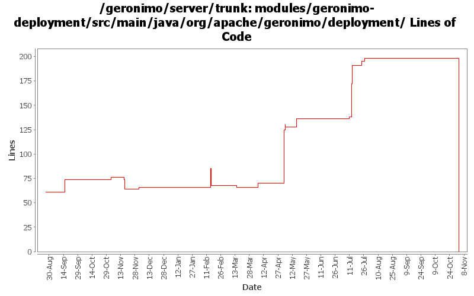

[root]/modules/geronimo-deployment/src/main/java/org/apache/geronimo/deployment
 util
(0 files, 0 lines)
util
(0 files, 0 lines)
 xml
(0 files, 0 lines)
xml
(0 files, 0 lines)
 xmlbeans
(0 files, 0 lines)
xmlbeans
(0 files, 0 lines)

| Author | Changes | Lines of Code | Lines per Change |
|---|---|---|---|
| Totals | 72 (100.0%) | 390 (100.0%) | 5.4 |
| djencks | 23 (31.9%) | 321 (82.3%) | 13.9 |
| kevan | 21 (29.2%) | 34 (8.7%) | 1.6 |
| gdamour | 2 (2.8%) | 16 (4.1%) | 8.0 |
| jlaskowski | 2 (2.8%) | 12 (3.1%) | 6.0 |
| akulshreshtha | 2 (2.8%) | 4 (1.0%) | 2.0 |
| vamsic007 | 1 (1.4%) | 2 (0.5%) | 2.0 |
| rickmcguire | 1 (1.4%) | 1 (0.3%) | 1.0 |
| prasad | 16 (22.2%) | 0 (0.0%) | 0.0 |
| jdillon | 4 (5.6%) | 0 (0.0%) | 0.0 |
GERONIMO-3565. Modules distributed amongst framework/modules and plugins
0 lines of code changed in 16 files:
make error message slightly easier to read
3 lines of code changed in 1 file:
GERONIMO-3350 get rid of questionable getURLFor method
8 lines of code changed in 1 file:
GERONIMO-3307 Clear up test case meaning a bit, better error message, and use the right DeploymentContext for finding the war manifest classpath
5 lines of code changed in 1 file:
GERONIMO-3316 Better messages when manifest cp resolution encounters problems. Also generified some more gbean stuff
53 lines of code changed in 1 file:
GERONIMO-3307 Unit tests and a whole lotta fixes
51 lines of code changed in 1 file:
GERONIMO-3307 fix a problem with identifying which module a persistence unit is supposed to be associated
9 lines of code changed in 1 file:
GERONIMO-3246 Cleanup exception handling so stack traces for first failures are not discarded.
1 lines of code changed in 1 file:
GERONIMO-3132 GERONIMO-3165. Fix a bunch of stuff with locating persistence.xml and persistence unit jars. Hook up with openejb for extended persistence contexts
12 lines of code changed in 3 files:
GERONIMO-3134 GERONIMO-3136 Fix app client refs including ejb refs. Get a lot closer to jpa working on the app client
9 lines of code changed in 1 file:
GERONIMO-3140 workaround for multiple matches during app client deploy
5 lines of code changed in 1 file:
GERONIMO-3131 GERONIMO-3132 GERONIMO-3133 GERONIMO-3134 Defaults for persistence units. Supply locations of jars with persistent classes to the PersistenceUnitInfo. Match a ref with not persistence unit specified to a unique match. Allow wars to have jndi references pointing to the war module, not just the ear
57 lines of code changed in 1 file:
GERONIMO-3070 only generate web app dependencies onto stuff in the current ear, not all the parents
4 lines of code changed in 1 file:
partial genericization
25 lines of code changed in 1 file:
GERONIMO-2485 Work on PersistenceUnitBuilder. jpa test app now deploys but can not access most persistence features
0 lines of code changed in 1 file:
GERONIMO-2485 Make persistence unit gbean abstract names more unique. NOT FINISHED, but in its current state gives different names to autogenerated cmp persistence units in different ejb modules
26 lines of code changed in 1 file:
GERONIMO-438 Deployer.deploy arguments inconsistent
o Looks like PackageMojo.invokeDeployer() is the only place where Deployer.deploy() method with "long signature" is called.
o See the JIRA for more information and observations
o Concluding the hunt for the method usage and updating Deployer and PackageMojo classes to make the arguments consistent
2 lines of code changed in 1 file:
GERONIMO-2607 reverted 485524
2 lines of code changed in 1 file:
GERGERONIMO-2607 Updated all GBeans to use new GBeanInfoBuilder.addOperation(..) method
2 lines of code changed in 1 file:
GERONIMO-2615 More info on what went wrong when a gbean ref isn't verified at deploy time
11 lines of code changed in 1 file:
GERONIMO-2537 Update the src headers in server/trunk/modules to be compliant with the new ASF src header and copyright policy (http://www.apache.org/legal/src-headers.html). I also did some cleanup of the src headers and tried to make them all a consistent format
34 lines of code changed in 21 files:
GERONIMO-2484 NamespaceDrivenBuilders should register QNameSets
43 lines of code changed in 4 files:
GERONIMO-2541 priority order for gbeans, including Gianny's backward compatibility patch
0 lines of code changed in 2 files:
Partial fix for GERONIMO-2537 All Geronimo source files must be brought in line with the new ASF source header and copyright notice policy
The modules directory is supposed to be migrated. There're some issues with some files, but they'll be handled manually
12 lines of code changed in 2 files:
GERONIMO-2163 - WADI Integration for Jetty
16 lines of code changed in 2 files:
Apply standard properties
0 lines of code changed in 4 files: